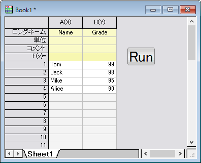

スクリプトとオブジェクトの関連付け
Associate-script-object
テキストオブジェクトからLabTalkスクリプトを実行する
Originはグラフやワークシートにボタンを追加する事ができ、ボタンを押す事でLabTalkスクリプトの実行が可能です。これにより、スクリプトを特定のプロジェクトやウィンドウに保存できます。
- 標準ツールバーの新規グラフボタン（
 ）をクリックし、新しいグラフを作成します。
）をクリックし、新しいグラフを作成します。
- プロット操作・オブジェクト作成ツールバーの中のテキストツールボタン（
 ）をクリックし、作成したグラフ上でクリックしてMy Button と入力します。テキストの入力が終わったら、テキストの外側をクリックして編集を終了します。
）をクリックし、作成したグラフ上でクリックしてMy Button と入力します。テキストの入力が終わったら、テキストの外側をクリックして編集を終了します。
- テキスト上で右クリックして、プロパティを選択します。プログラミングタブをクリックして選択します。
- のあとでスクリプトを実行ドロップダウンリストでボタンアップと設定し、以下を編集ボックスに入力します。
type -b "Hello World";
- OKをクリックして、ダイアログを閉じます。テキストラベルがボタンになりました。ボタンをクリックします。Hello World と表示されたメッセージがポップアップします。
詳細は、図形オブジェクトからLabTalkスクリプトを実行するを参照してください。
テキストオブジェクトからPythonスクリプトを実行する
- 新しいワークブックを作成します。
- プロジェクトウィンドウの左側にあるプロット操作・オブジェクト作成ツールバーより、テキストツールを選択します。
- ワークシートの空いているスペース（最後の列の右側にある灰色の領域）をクリックします。テキストオブジェクトにRunと入力し、オブジェクトの外側をクリックします。これで、ボタンのラベルが作成されました。
- Altキーを押しながら、作成したテキストオブジェクトをダブルクリックします。 オブジェクトダイアログが開き、プログラミングタブが表示されます。
- 下側のテキストボックスに、このスクリプトを入力します
import pandas as pd
import originpro as op
data = {'Name':['Tom', 'Jack', 'Mike', 'Alice'],
'Grade':[99, 98, 95, 90]}
df = pd.DataFrame(data)
wks = op.find_sheet()
wks.from_df(df)
- のあとでスクリプトを実行ドロップダウンリストから、ボタンアップを選択し、OKをクリックします。
- ボタンを押し、データをワークシートにインポートします。

詳細は、図形オブジェクトからPythonスクリプトを実行するを参照してください。